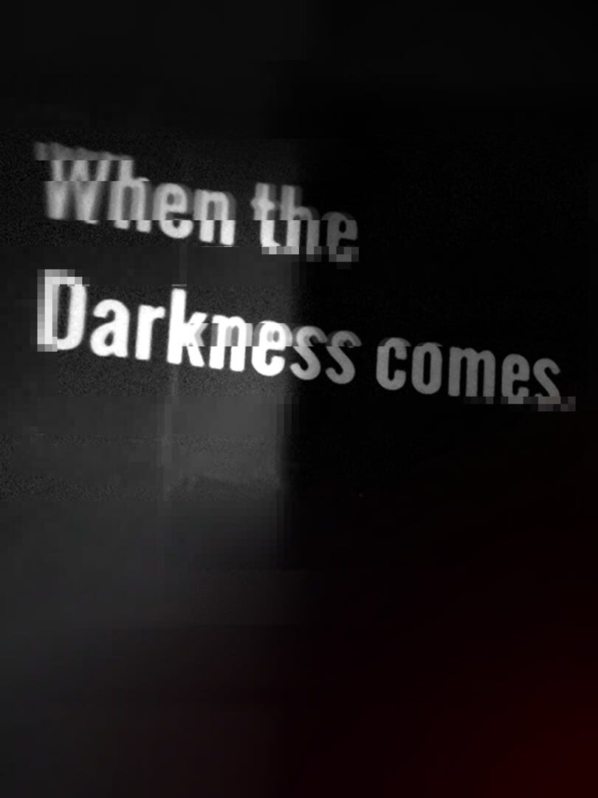

When the Darkness comes
When the Darkness comes
Details
|  | |
| Playtime | Not Played |
| Last Activity | Never |
| Added | 2025-09-08 16:50:03 |
| Modified | 2025-10-02 10:28:45 |
| Completion Status | Not Played |
| Library | Steam |
| Source | Steam |
| Platform | PC (Windows) |
| Release Date | 2019-01-12 |
| Community Score | 70 |
| Critic Score | 90 |
| User Score | |
| Genre | Adventure Indie |
| Developer | Sirhaian |
| Publisher | Sirhaian |
| Feature | Single Player |
| Links | Official Website YouTube Itch Community Wiki Subreddit Steam Twitch |
| Tag | Adventure Atmospheric Choices Matter Dark Dynamic Narration Emotional First-Person Free to Play Horror Indie Narration Perma Death Philosophical Psychological Psychological Horror Puzzle Singleplayer Story Rich Surreal Walking Simulator |
Description
A Game Without Meaning.
A Game Nobody Should Play.
When the Darkness comes is a walking simulator whose glitchy and dark tale tries to illustrate the hardships of depression and anxiety through a variety of imaginary digital landscapes.
A clock, a piano and a girl. What do they all mean?
What is meaning, anyway? What has meaning?
Do you have one? A path, a goal, something determined, pre-determined?
A light to follow?
Discover a world filled with loneliness and fear. A world where despair breathes and hope dies. A world about you, about us. A world about humanity and about life.
This Experience explores themes such as depression, anxiety, verbal abuse, manipulative control, and suicide.
This game could also potentially trigger epilepsy attacks.
Seriously, do NOT play this Experience if you believe this might affect you in any way.
The first Arc should take about one hour to complete.
Interact: F
Jump: Space
Sprint: Shift
There's a toggle to swap between AZERTY and QWERTY layouts in-game.
This Experience might not be suitable for streaming audiences.
A Game Nobody Should Play.
When the Darkness comes is a walking simulator whose glitchy and dark tale tries to illustrate the hardships of depression and anxiety through a variety of imaginary digital landscapes.
A clock, a piano and a girl. What do they all mean?
What is meaning, anyway? What has meaning?
Do you have one? A path, a goal, something determined, pre-determined?
A light to follow?
Discover a world filled with loneliness and fear. A world where despair breathes and hope dies. A world about you, about us. A world about humanity and about life.
Before Starting
This Experience is NOT for everyone.This Experience explores themes such as depression, anxiety, verbal abuse, manipulative control, and suicide.
This game could also potentially trigger epilepsy attacks.
Seriously, do NOT play this Experience if you believe this might affect you in any way.
The first Arc should take about one hour to complete.
About the Experience
This was the culmination of a self exploration into my own psyche. If it can help anyone else explore their own I am thankful for that, and if the game isn't to your liking I appreciate you taking the time to try it anyway. I won't be updating it anymore (safe for major bugs) since it was simply an outlet for my own creativity but enjoy it as it is.Controls
Movement: WASD or arrow keysInteract: F
Jump: Space
Sprint: Shift
There's a toggle to swap between AZERTY and QWERTY layouts in-game.
This Experience might not be suitable for streaming audiences.